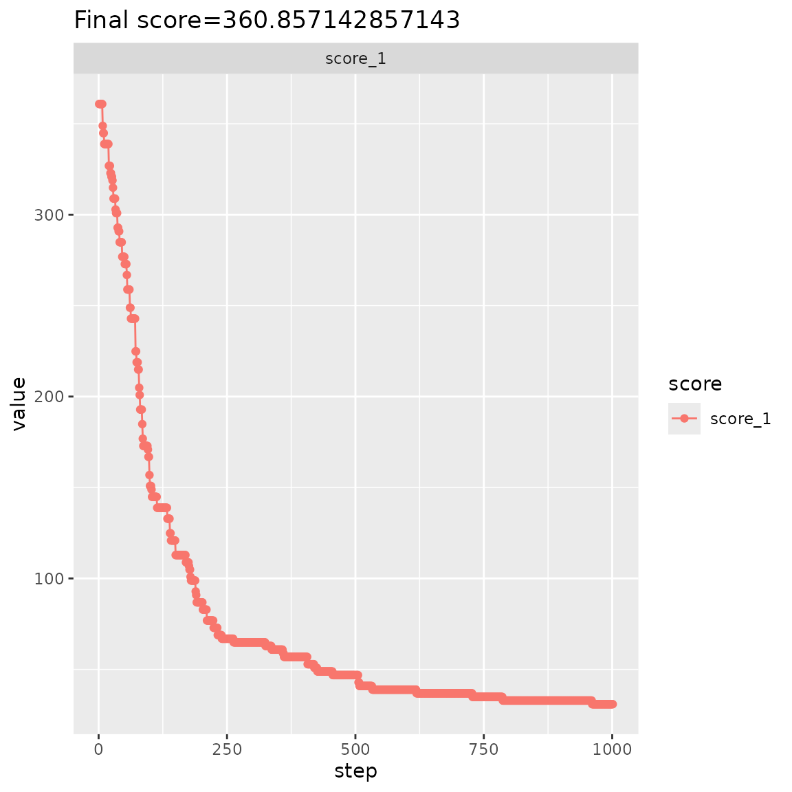
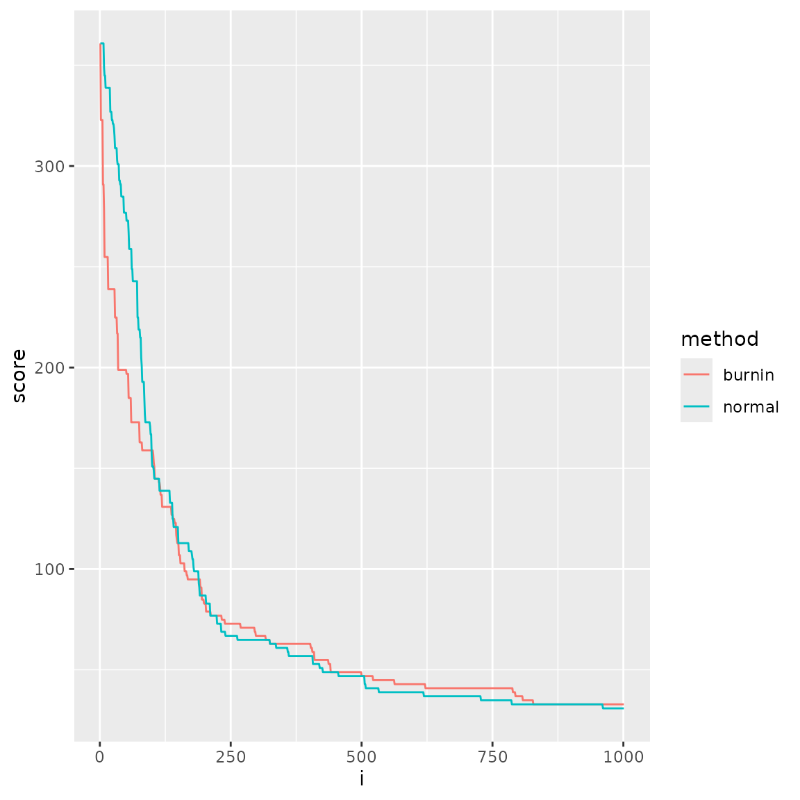

In this vignette, we demonstrate how to use the OSAT score (Yan et al. (2012)).
library(designit)
library(tidyverse)
#> ── Attaching core tidyverse packages ──────────────────────── tidyverse 2.0.0 ──
#> ✔ dplyr 1.1.4 ✔ readr 2.1.5
#> ✔ forcats 1.0.0 ✔ stringr 1.5.1
#> ✔ ggplot2 3.5.1 ✔ tibble 3.2.1
#> ✔ lubridate 1.9.3 ✔ tidyr 1.3.1
#> ✔ purrr 1.0.2
#> ── Conflicts ────────────────────────────────────────── tidyverse_conflicts() ──
#> ✖ dplyr::filter() masks stats::filter()
#> ✖ dplyr::lag() masks stats::lag()
#> ℹ Use the conflicted package (<http://conflicted.r-lib.org/>) to force all conflicts to become errors
if (!requireNamespace("OSAT")) {
print("This vignette can only be rendered if `OSAT` package is installed.")
knitr::knit_exit()
}
#> Loading required namespace: OSATLoading samples. We add two dummy columns to demonstrate how to choose batch columns of interest.
osat_data_path <- system.file("extdata", package = "OSAT")
samples <- read_tsv(file.path(osat_data_path, "samples.txt"),
col_types = cols(SampleType = col_factor(), Race = col_factor(), AgeGrp = col_factor())
) |>
mutate(dummy_var1 = rnorm(n()), dummy_var2 = str_c(SampleType, Race, sep = " "))Running OSAT optimization
Here we use OSAT to optimize setup.
gs <- OSAT::setup.sample(samples, optimal = c("SampleType", "Race", "AgeGrp"))
gc <- OSAT::setup.container(OSAT::IlluminaBeadChip96Plate, 7, batch = "plates")
set.seed(1234)
bench::system_time(
g_setup <- OSAT::create.optimized.setup(sample = gs, container = gc, nSim = params$iterations)
)
#> Warning in OSAT::create.optimized.setup(sample = gs, container = gc, nSim =
#> params$iterations): Using default optimization method: optimal.shuffle
#> process real
#> 910ms 910ms
OSAT::QC(g_setup)
#>
#> Test independence between "plates" and sample variables
#>
#> Pearson's Chi-squared test
#> Var X-squared df p.value
#> 1 SampleType 0.4938509 6 0.9979125
#> 2 Race 0.7424849 6 0.9935279
#> 3 AgeGrp 1.8472070 24 1.0000000
#> Saving starting point of optimization
set.seed(1234)
g_setup_start <- OSAT::create.optimized.setup(sample = gs, container = gc, nSim = 1) |>
OSAT::get.experiment.setup()
#> Warning in OSAT::create.optimized.setup(sample = gs, container = gc, nSim = 1):
#> Using default optimization method: optimal.shuffleVisualize various batch factors. OSAT score is optimized only for
plates in this case.
OSAT::get.experiment.setup(g_setup) |>
select(AgeGrp, plates, chipRows, chipColumns, chips, rows, columns, wells) |>
pivot_longer(-AgeGrp) |>
count(AgeGrp, value, name) |>
ggplot(aes(AgeGrp, n, fill = factor(value))) +
geom_col(position = "dodge") +
facet_wrap(~name, scales = "free_y")Visualize for plates
plot_batch <- function(df) {
df |>
select(plates, SampleType, Race, AgeGrp) |>
pivot_longer(c(SampleType, Race, AgeGrp), names_to = "variable", values_to = "level") |>
count(plates, variable, level) |>
ggplot(aes(level, n, fill = factor(plates))) +
geom_col(position = "dodge") +
facet_wrap(~variable, scales = "free", ncol = 1)
}Before the optimization.
g_setup_start |> plot_batch()
After the optimization.
OSAT::get.experiment.setup(g_setup) |>
plot_batch()Compare scores with various implementations
Compare OSAT score generated using designit.
OSAT::getLayout(gc) |>
left_join(OSAT::get.experiment.setup(g_setup)) |>
data.table::data.table() |>
osat_score("plates", c("SampleType", "Race", "AgeGrp")) |>
with(score)
#> Joining with `by = join_by(plates, chipRows, chipColumns, chips, rows, columns,
#> wells)`
#> Warning in osat_score(data.table::data.table(left_join(OSAT::getLayout(gc), :
#> NAs in features / batch columns; they will be excluded from scoring
#> [1] 34.85714
# score using OSAT
g_setup@metadata$optValue |> tail(1)
#> [1] 34.85714Run using BatchContainer
First let’s create a BatchContainer with same dimensions.
bc <- BatchContainer$new(
dimensions = c(plates = 7, chips = 8, rows = 6, columns = 2)
)
bc
#> Batch container with 672 locations.
#> Dimensions: plates, chips, rows, columns
bc$n_locations
#> [1] 672Assign samples and get initial setup.
bc <- assign_in_order(bc, samples)
starting_assignment <- bc$get_locations() |>
left_join(g_setup_start) |>
pull(ID) |>
as.integer()
#> Joining with `by = join_by(plates, chips, rows, columns)`
bc$move_samples(location_assignment = starting_assignment)
bc$get_samples(remove_empty_locations = TRUE) |>
plot_batch()Using designit OSAT score implementation
scoring_f <- osat_score_generator("plates", c("SampleType", "Race", "AgeGrp"))
bc$score(scoring_f)
#> Warning in osat_score(bc, batch_vars = batch_vars, feature_vars = feature_vars,
#> : NAs in features / batch columns; they will be excluded from scoring
#> score_1
#> 360.8571
g_setup@metadata$optValue |> head(1)
#> [1] 360.8571
# should be identical
bench::system_time({
set.seed(123)
bc_reference <- optimize_design(bc, scoring = scoring_f, max_iter = params$iterations)
})
#> Checking variances of 1-dim. score vector.
#> ... (6749.04) - OK
#> Initial score: 360.857
#> Achieved score: 348.857 at iteration 7
#> Achieved score: 344.857 at iteration 8
#> Achieved score: 338.857 at iteration 10
#> Achieved score: 326.857 at iteration 19
#> Achieved score: 322.857 at iteration 22
#> Achieved score: 320.857 at iteration 24
#> Achieved score: 318.857 at iteration 26
#> Achieved score: 314.857 at iteration 27
#> Achieved score: 308.857 at iteration 28
#> Achieved score: 302.857 at iteration 32
#> Achieved score: 300.857 at iteration 33
#> Achieved score: 292.857 at iteration 36
#> Achieved score: 290.857 at iteration 38
#> Achieved score: 284.857 at iteration 40
#> Achieved score: 276.857 at iteration 45
#> Achieved score: 272.857 at iteration 50
#> Achieved score: 266.857 at iteration 54
#> Achieved score: 258.857 at iteration 55
#> Achieved score: 248.857 at iteration 60
#> Achieved score: 242.857 at iteration 62
#> Achieved score: 224.857 at iteration 71
#> Achieved score: 218.857 at iteration 73
#> Achieved score: 214.857 at iteration 76
#> Achieved score: 204.857 at iteration 78
#> Achieved score: 200.857 at iteration 79
#> Achieved score: 192.857 at iteration 80
#> Achieved score: 184.857 at iteration 84
#> Achieved score: 176.857 at iteration 85
#> Achieved score: 172.857 at iteration 86
#> Achieved score: 170.857 at iteration 95
#> Achieved score: 166.857 at iteration 96
#> Achieved score: 156.857 at iteration 98
#> Achieved score: 150.857 at iteration 99
#> Achieved score: 148.857 at iteration 102
#> Achieved score: 144.857 at iteration 103
#> Achieved score: 138.857 at iteration 113
#> Achieved score: 132.857 at iteration 133
#> Achieved score: 124.857 at iteration 138
#> Achieved score: 120.857 at iteration 140
#> Achieved score: 112.857 at iteration 149
#> Achieved score: 108.857 at iteration 169
#> Achieved score: 106.857 at iteration 175
#> Achieved score: 104.857 at iteration 176
#> Achieved score: 100.857 at iteration 178
#> Achieved score: 98.857 at iteration 179
#> Achieved score: 92.857 at iteration 188
#> Achieved score: 90.857 at iteration 189
#> Achieved score: 86.857 at iteration 190
#> Achieved score: 82.857 at iteration 202
#> Achieved score: 76.857 at iteration 210
#> Achieved score: 72.857 at iteration 223
#> Achieved score: 68.857 at iteration 231
#> Achieved score: 66.857 at iteration 239
#> Achieved score: 64.857 at iteration 262
#> Achieved score: 62.857 at iteration 324
#> Achieved score: 60.857 at iteration 336
#> Achieved score: 58.857 at iteration 358
#> Achieved score: 56.857 at iteration 360
#> Achieved score: 52.857 at iteration 406
#> Achieved score: 50.857 at iteration 419
#> Achieved score: 48.857 at iteration 425
#> Achieved score: 46.857 at iteration 455
#> Achieved score: 42.857 at iteration 505
#> Achieved score: 40.857 at iteration 507
#> Achieved score: 38.857 at iteration 532
#> Achieved score: 36.857 at iteration 618
#> Achieved score: 34.857 at iteration 727
#> Achieved score: 32.857 at iteration 786
#> Achieved score: 30.857 at iteration 960
#> process real
#> 15.3s 7.9s
# final score
bc_reference$score(scoring_f)
#> score_1
#> 30.85714
bc_reference$plot_trace() +
ggtitle(str_glue("Final score={bc$score(scoring_f)}"))
bc$get_samples(remove_empty_locations = TRUE) |>
plot_batch()
Manually work with data.table
Instead of relying on BatchContainer, here we have a
manual optimization process using data.table.
fast_osat_optimize <- function(bc, batch_vars, feature_vars, iterations) {
bc <- bc$copy()
ldf <- data.table::data.table(bc$get_locations())[, c("plates")][, ".sample_id" := bc$assignment]
fcols <- c(".sample_id", feature_vars)
smp <- data.table::data.table(bc$samples)[, ..fcols]
df <- smp[ldf, on = ".sample_id"]
v <- osat_score(df, batch_vars, feature_vars)
edf <- v$expected_dt
current_score <- v$score
scores <- numeric(length = iterations)
n_avail <- nrow(df)
for (i in 1:iterations) {
repeat {
pos <- sample(n_avail, 2)
# does not make sense to shuffle NAs
if (any(!is.na(df[pos, feature_vars[1]]))) {
break
}
}
val <- df[c(pos[2], pos[1]), fcols, with = FALSE]
df[c(pos[1], pos[2]), (fcols) := val]
new_score <- osat_score(df, batch_vars, feature_vars, edf)$score
if (new_score <= current_score) {
current_score <- new_score
} else {
df[c(pos[2], pos[1]), (fcols) := val]
}
scores[i] <- current_score
}
bc$assignment <- df$.sample_id
list(bc=bc, scores=scores)
}
bench::system_time({
set.seed(123)
opt_res <- fast_osat_optimize(bc, "plates", c("SampleType", "Race", "AgeGrp"), iterations = params$iterations)
})
#> Warning in osat_score(df, batch_vars, feature_vars): NAs in features / batch
#> columns; they will be excluded from scoring
#> Warning in (function (assignment) : this field might become read-only in the
#> future, please use $move_samples() instead
#> process real
#> 10.17s 5.18sShuffle optimization with burn-in
scoring_f <- osat_score_generator("plates", c("SampleType", "Race", "AgeGrp"))
burn_in_it <- floor(params$iterations * 0.1)
burn_in_it
#> [1] 100
bench::system_time({
set.seed(123)
bc_burn_in <- optimize_design(
bc,
scoring = scoring_f,
n_shuffle = c(
rep(20, burn_in_it),
rep(
2,
params$iterations - burn_in_it
)
),
max_iter = params$iterations
)
})
#> Warning in osat_score(bc, batch_vars = batch_vars, feature_vars = feature_vars,
#> : NAs in features / batch columns; they will be excluded from scoring
#> Checking variances of 1-dim. score vector.
#> ... (5018.697) - OK
#> Initial score: 360.857
#> Achieved score: 322.857 at iteration 1
#> Achieved score: 290.857 at iteration 5
#> Achieved score: 278.857 at iteration 7
#> Achieved score: 254.857 at iteration 8
#> Achieved score: 238.857 at iteration 15
#> Achieved score: 224.857 at iteration 28
#> Achieved score: 216.857 at iteration 32
#> Achieved score: 198.857 at iteration 34
#> Achieved score: 196.857 at iteration 50
#> Achieved score: 184.857 at iteration 54
#> Achieved score: 172.857 at iteration 59
#> Achieved score: 162.857 at iteration 75
#> Achieved score: 158.857 at iteration 80
#> Achieved score: 156.857 at iteration 101
#> Achieved score: 152.857 at iteration 102
#> Achieved score: 150.857 at iteration 103
#> Achieved score: 144.857 at iteration 104
#> Achieved score: 142.857 at iteration 112
#> Achieved score: 140.857 at iteration 114
#> Achieved score: 136.857 at iteration 115
#> Achieved score: 130.857 at iteration 118
#> Achieved score: 126.857 at iteration 136
#> Achieved score: 124.857 at iteration 139
#> Achieved score: 122.857 at iteration 142
#> Achieved score: 116.857 at iteration 145
#> Achieved score: 114.857 at iteration 146
#> Achieved score: 112.857 at iteration 147
#> Achieved score: 106.857 at iteration 150
#> Achieved score: 102.857 at iteration 153
#> Achieved score: 98.857 at iteration 161
#> Achieved score: 96.857 at iteration 165
#> Achieved score: 94.857 at iteration 167
#> Achieved score: 90.857 at iteration 191
#> Achieved score: 84.857 at iteration 194
#> Achieved score: 82.857 at iteration 198
#> Achieved score: 78.857 at iteration 202
#> Achieved score: 76.857 at iteration 211
#> Achieved score: 74.857 at iteration 232
#> Achieved score: 72.857 at iteration 238
#> Achieved score: 70.857 at iteration 268
#> Achieved score: 68.857 at iteration 295
#> Achieved score: 66.857 at iteration 297
#> Achieved score: 64.857 at iteration 316
#> Achieved score: 62.857 at iteration 324
#> Achieved score: 60.857 at iteration 402
#> Achieved score: 58.857 at iteration 405
#> Achieved score: 54.857 at iteration 409
#> Achieved score: 52.857 at iteration 436
#> Achieved score: 48.857 at iteration 440
#> Achieved score: 46.857 at iteration 499
#> Achieved score: 44.857 at iteration 521
#> Achieved score: 42.857 at iteration 562
#> Achieved score: 40.857 at iteration 621
#> Achieved score: 38.857 at iteration 788
#> Achieved score: 36.857 at iteration 793
#> Achieved score: 34.857 at iteration 807
#> Achieved score: 32.857 at iteration 827
#> process real
#> 15.7s 8.2s
tibble(
i = bc_burn_in$trace$scores[[1]]$step,
normal = bc_reference$trace$scores[[1]]$score_1,
burnin = bc_burn_in$trace$scores[[1]]$score_1
) |>
pivot_longer(-i, names_to = "method", values_to = "score") |>
ggplot(aes(i, score, col = method)) +
geom_line()
Score demonstration
bc$score(scoring_f)
#> score_1
#> 360.8571
assign_random(bc)
#> Batch container with 672 locations and 576 samples (assigned).
#> Dimensions: plates, chips, rows, columns
bc$get_samples()
#> # A tibble: 672 × 10
#> plates chips rows columns ID SampleType Race AgeGrp dummy_var1
#> <int> <int> <int> <int> <dbl> <fct> <fct> <fct> <dbl>
#> 1 1 1 1 1 563 Control Hispanic (30,40] -1.71
#> 2 1 1 1 2 488 Control European (30,40] 0.747
#> 3 1 1 2 1 215 Case European (50,60] 0.542
#> 4 1 1 2 2 268 Case Hispanic (40,50] -0.968
#> 5 1 1 3 1 165 Case European (60,100] -1.79
#> 6 1 1 3 2 86 Case Hispanic (60,100] 1.11
#> 7 1 1 4 1 264 Case European (60,100] -0.212
#> 8 1 1 4 2 451 Control European (30,40] 1.78
#> 9 1 1 5 1 250 Case Hispanic (60,100] 0.129
#> 10 1 1 5 2 NA NA NA NA NA
#> # ℹ 662 more rows
#> # ℹ 1 more variable: dummy_var2 <chr>
bc$get_samples(remove_empty_locations = TRUE)
#> # A tibble: 576 × 10
#> plates chips rows columns ID SampleType Race AgeGrp dummy_var1
#> <int> <int> <int> <int> <dbl> <fct> <fct> <fct> <dbl>
#> 1 1 1 1 1 563 Control Hispanic (30,40] -1.71
#> 2 1 1 1 2 488 Control European (30,40] 0.747
#> 3 1 1 2 1 215 Case European (50,60] 0.542
#> 4 1 1 2 2 268 Case Hispanic (40,50] -0.968
#> 5 1 1 3 1 165 Case European (60,100] -1.79
#> 6 1 1 3 2 86 Case Hispanic (60,100] 1.11
#> 7 1 1 4 1 264 Case European (60,100] -0.212
#> 8 1 1 4 2 451 Control European (30,40] 1.78
#> 9 1 1 5 1 250 Case Hispanic (60,100] 0.129
#> 10 1 1 6 1 191 Case Hispanic (60,100] 1.12
#> # ℹ 566 more rows
#> # ℹ 1 more variable: dummy_var2 <chr>
scoring_f <- list(
fc0 = function(samples) rnorm(1) + 2 * rexp(1),
fc1 = function(samples) rnorm(1, 100),
fc2 = function(samples) -7
)
bc$score(scoring_f)
#> fc0 fc1 fc2
#> 3.64428 100.78084 -7.00000